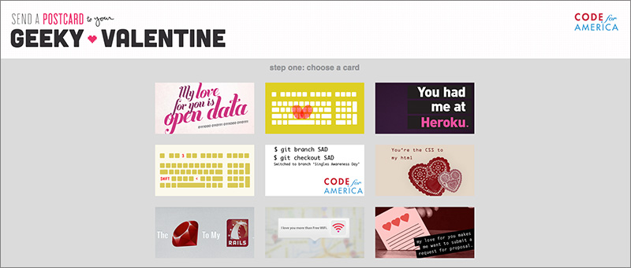

    <section>

    <div class="layout-semibreve">

        <div class="layout-centered">
            
            <h4>My Geeky Valentine</h4>
                <p>Visit our <a href="http://cfavalentines.herokuapp.com/">Heroku App</a> and personalize a card for that geeky someone.</p>
                
                <p><a href="http://cfavalentines.herokuapp.com/"></a></p>
        </div>
        
     <div class="layout-semibreve">
     
     <p class="isolate text-whisper">These Valentine's are a collaboration from the 2011 and 2012 fellows including Karla Macedo, Anna Bloom, Ryan Resella, Diana Tran, and Mick Thompson. If you’ve got a good idea for another, let us know at <a href="http://twitter.com/codeforamerica">@codeforamerica</a>.</p>
     
     </div>
    
                   
</section>

